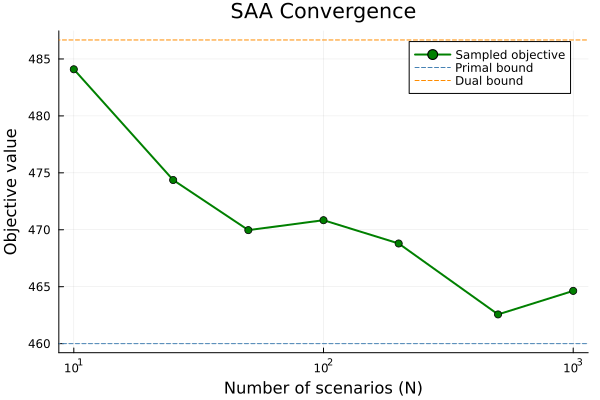

Sampled (SAA) decision rules
This tutorial introduces the sampled (Sample Average Approximation) solution mode. Instead of solving the robust primal/dual formulations, SolveSampled generates scenarios from the uncertainty distributions and optimizes the LDR coefficients over those samples.
We build on the Newsvendor problem from the Getting started with LinearDecisionRules tutorial.
Why sampled?
The primal and dual LDR formulations provide bounds on the optimal objective. The primal is an inner approximation (lower bound for maximization), and the dual is an outer approximation (upper bound). Both rely on computing the second moment matrix $M = E[\xi \xi^\top]$ and enforcing constraints robustly over the entire uncertainty set.
The sampled approach instead:
- Draws $N$ scenarios $\xi_1, \dots, \xi_N$ from the distributions
- Enforces constraints per scenario (no dual multiplier matrices)
- Optimizes the average objective over all scenarios
This trades the conservatism of the robust formulation for a data-driven approach that can handle complex distributions naturally.
Setup
using JuMP
import LinearDecisionRules
import HiGHS
import Distributions
import PlotsThe Newsvendor problem
buy_cost = 10
sell_value = 15
return_value = 8
demand_min = 80
demand_max = 120120Part 1: Basic sampled solution
We set up the same Newsvendor model and enable SolveSampled:
ldr = LinearDecisionRules.LDRModel(HiGHS.Optimizer)
set_silent(ldr)
@variable(ldr, buy >= 0, LinearDecisionRules.FirstStage)
@variable(ldr, sell >= 0)
@variable(ldr, ret >= 0)
@variable(
ldr,
demand in LinearDecisionRules.Uncertainty(;
distribution = Distributions.Uniform(demand_min, demand_max),
)
)
@constraint(ldr, sell + ret <= buy)
@constraint(ldr, sell <= demand)
@objective(ldr, Max, -buy_cost * buy + return_value * ret + sell_value * sell)
set_attribute(ldr, LinearDecisionRules.SolveSampled(), true)
set_attribute(ldr, LinearDecisionRules.NumScenarios(), 500)
optimize!(ldr)
println("Primal bound: ", objective_value(ldr))
println("Dual bound: ", objective_value(ldr; dual = true))
println("Sampled obj: ", objective_value(ldr; sampled = true))Primal bound: 460.0
Dual bound: 486.6666666666665
Sampled obj: 462.56390857417193The sampled objective falls above the primal bound.
Extracting the decision rule
The decision rule coefficients are extracted the same way as for primal/dual, using the sampled = true keyword:
buy_val = LinearDecisionRules.get_decision(ldr, buy; sampled = true)
sell_slope = LinearDecisionRules.get_decision(ldr, sell, demand; sampled = true)
sell_const = LinearDecisionRules.get_decision(ldr, sell; sampled = true)
println("\nSampled decision rule:")
println(" buy = ", round(buy_val; digits = 2))
println(
" sell(demand) = ",
round(sell_const; digits = 2),
" + ",
round(sell_slope; digits = 2),
" * demand",
)
Sampled decision rule:
buy = 119.89
sell(demand) = 0.0 + 1.0 * demandPart 2: Comparing solution methods
Let's solve the same problem with all three methods and compare:
function solve_newsvendor_all(; n_scenarios = 500)
m = LinearDecisionRules.LDRModel(HiGHS.Optimizer)
set_silent(m)
@variable(m, buy >= 0, LinearDecisionRules.FirstStage)
@variable(m, sell >= 0)
@variable(m, ret >= 0)
@variable(
m,
demand in LinearDecisionRules.Uncertainty(;
distribution = Distributions.Uniform(demand_min, demand_max),
)
)
@constraint(m, sell + ret <= buy)
@constraint(m, sell <= demand)
@objective(m, Max, -buy_cost * buy + return_value * ret + sell_value * sell)
set_attribute(m, LinearDecisionRules.SolveSampled(), true)
set_attribute(m, LinearDecisionRules.NumScenarios(), n_scenarios)
optimize!(m)
return (
primal = objective_value(m),
dual = objective_value(m; dual = true),
sampled = objective_value(m; sampled = true),
)
end
result = solve_newsvendor_all(; n_scenarios = 500)
println("\nComparison (N=500):")
println(" Primal: ", round(result.primal; digits = 2))
println(" Dual: ", round(result.dual; digits = 2))
println(" Sampled: ", round(result.sampled; digits = 2))
Comparison (N=500):
Primal: 460.0
Dual: 486.67
Sampled: 462.56Part 3: Effect of scenario count
The quality of the sampled solution depends on the number of scenarios. Let's see how the objective converges as we increase $N$:
scenario_counts = [10, 25, 50, 100, 200, 500, 1000]
sampled_objs = Float64[]
for n in scenario_counts
r = solve_newsvendor_all(; n_scenarios = n)
push!(sampled_objs, r.sampled)
endFor reference, get the primal and dual bounds (these don't depend on N):
ref = solve_newsvendor_all(; n_scenarios = 100)
p = Plots.plot(
scenario_counts,
sampled_objs;
label = "Sampled objective",
xlabel = "Number of scenarios (N)",
ylabel = "Objective value",
title = "SAA Convergence",
marker = :circle,
linewidth = 2,
xscale = :log10,
color = :green,
)
Plots.hline!(
p,
[ref.primal];
label = "Primal bound",
linestyle = :dash,
color = :steelblue,
)
Plots.hline!(
p,
[ref.dual];
label = "Dual bound",
linestyle = :dash,
color = :darkorange,
)
With more scenarios, the sampled objective converges. The primal and dual bounds are independent of $N$ since they use the analytical second moment matrix.
Key API summary
| Function | Description |
|---|---|
set_attribute(model, SolveSampled(), true) | Enable sampled mode |
set_attribute(model, NumScenarios(), N) | Set scenario count |
objective_value(model; sampled=true) | Get sampled objective |
get_decision(model, x; sampled=true) | Get constant term |
get_decision(model, x, ξ; sampled=true) | Get coefficient on ξ |
What's next?
Now that you understand sampled decision rules, you can:
- Combine them with piecewise linear decision rules for better approximations
- Learn about distributions to model complex uncertainty